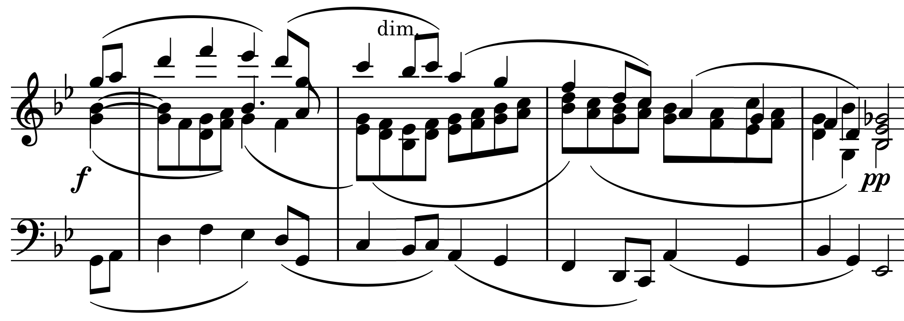

ヴォーン・ウィリアムズ: 弦楽四重奏曲第2番
ヴォーン・ウィリアムズの弦楽四重奏曲を知ったのは『このNAXOSを聴け！』（松本大輔著）でマッジーニ四重奏団の録音が紹介されていたのを読んだのがきっかけで、そのCDは長年愛聴盤となっている。今年2022年はヴォーン・ウィリアムズ生誕150年に当たっておりそれにちなんだ新しい録音がいくつも出ているが、このマッジーニと同じく2曲の弦楽四重奏曲を演奏したティペット四重奏団による新録音（こちらは『幻想五重奏曲』がなくて、ホルストの『イギリス民謡による幻想曲』が含まれている。これも逸品。）を見つけた。
Vaughan Williams: String Quartet No. 2 in A Minor
Tippett Quartet
(2022)
最新録音のせいか解像度が良い。特に厚い和音でも見通しのよい響きを保っている。この四重奏曲第2番には『タリス幻想曲』を想わせる重苦しいけれども透明感のある和音が連鎖する箇所があり、但しそこにはほんのわずかずれが含まれていて響き合うことを妨げられるような意図も感じさせるが、そういう所でもこの演奏は響きに無理がなく自然である。
ところで、マッジーニのCDにはどうも解せない点がある。よく就寝前に音量をやや絞りかけっぱなしで聴いていたのだが、第2番の2楽章あたりでもう終わってしまったのかと勘違いするくらい極端に音が小さくなるのだ。今回ストリーミングにも同じ音源があったので聴いてみたがCDと同じなので、これは演奏者の意図としてそのような極端なデュナーミクが採られていると思って間違いないだろう。
Vaughan Williams: String Quartet No. 2 in A Minor
Maggini Quartet
(2000)
第1トラックの幻想五重奏曲からその傾向があり、最弱音部を聴き取るには再生音量をかなり上げる必要がある。ティペット四重奏団やその他の演奏（Spotifyには少なくともメディチ四重奏団、ミュージックグループ・オブ・ロンドンによる演奏がある）と比べてもこの強弱レンジの大きさは尋常ではない。第2番においては、3楽章までの曲調が暗いのと相まって猟奇的といってもいいくらいかもしれない。2楽章(Romance)後半の最後の盛り上がりからppに落ちるところ（譜例のdim.）などがわかりやすいのだが、まるでボリュームを絞ったように同じ音色でありながら音量だけが急速に減衰する。これも技術なのだとしたら凄いけれども、ずっと不自然に思えて仕方がなかったものだ。

(Nov. 19, 2022)